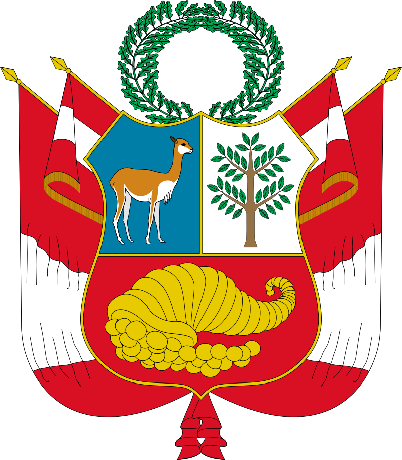

____
Флаг
Флаг Перу представляет собой прямоугольное полотнище с соотношением сторон 2:3, состоящее из трёх равновеликих вертикальных полос красного и белого цветов. В центре правительственного флага помещено изображение герба Перу. Флаг принят в 1825 году. День Государственного флага Перу отмечается 7 июня. Белый цвет символизирует мир, достоинство и прогресс, красный — войну и храбрость.
Согласно легенде, генерал Хосе де Сан-Мартин, появившись в Перу в 1820 году, увидел много фламинго. Приняв это за добрый знак, он решил, что красный и белый должны стать цветами Перуанского легиона, который он создал, чтобы освободить Перу.

Герб
Герб перуанской нации будет состоять из щита, разделённого на три поля: в правом, голубом, поле, изображена викунья, смотрящая внутрь; в левом, белом, изображено хинное дерево, а в нижнем, красном, изображён рог изобилия, из которого сыпятся монеты. что означает богатство Перу в трех природных царствах.

____